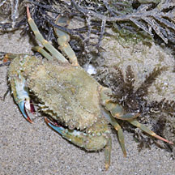
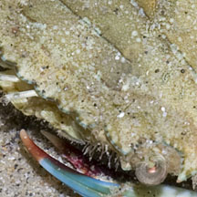
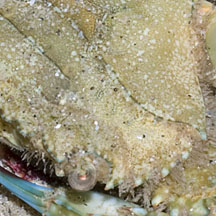
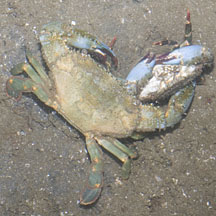

|
|
| crabs text index | photo index |
| Phylum Arthropoda > Subphylum Crustacea > Class Malacostraca > Order Decapoda > Brachyurans > Family Portunidae |
| Powder
blue-clawed swimming crab Thalamita crenata* Family Portunidae updated Dec 2019 Where seen? This swimming crab with powder blue pincers is sometimes seen near seagrasses and reefs on some of our shores. Elsewhere, they are also found in mangroves and soft-silty bottoms near rocky areas without reefs. Features: Body width 5-7cm. Body somewhat rectangular, the sides of the body with 5 light blue-light brown tipped spines of about equal size. The eyes are wide apart. Between the eyes are 6 small rounded lobes. Walking legs greenish or bluish with orange joints and orange or red tips. Last pair of legs are paddle-shaped. Body and pincers sand coloured, plain light olive or pinkish, The body edge may have a fine powder blue-brown banded pattern. The pincers are powder blue with dark red tips. Human uses: Harvested elsewhere by traps, trawling and nets although it is not as commercially valuable as other swimming crabs. |
 Tanah Merah, Sep 09 |
 6 small rounded lobes between the eyes. |
 5 spines on the body side, edged with small blue and dark spots. |
 A pair about to mate? Punggol, Jun 12 |
*Species are difficult to positively identify without close examination.
On this website, they are grouped by external features for convenience of display.
| Powder blue-clawed swimming crabs on Singapore shores |
On wildsingapore
flickr
|
| Other sightings on Singapore shores |
Links
|